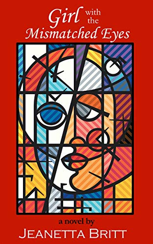

Girl with the Mismatched Eyes
"Ripped-from-the-headlines action story!"
Molly - the girl with the mismatched eyes - and the nefarious 4-G Crew will lead us on a merry chase, traipsing through their white privilege and malicious intentions for the black community, to find their true identities and their God-ordained destiny. But, in the meantime, if Lucille Jackson has anything to say about it, her husband, Bertram--the first black sheriff ever elected in the region--will be working overtime to keep Screamer, South Carolina from living up to its name which is deeply rooted in its racist past. The Jacksons are determined to keep the black community safe and to make sure black lives matter. Along the way, however, they all may make a startling discovery:"...all racists ain't white..."
AMAZON
PREVIEW
SHARE
Dipped in the Fire (Book 1)
Preacher’s kids, Money and Melissa, have been going to church all of their lives; Wanza and Yteesha, not so much. But none of that matters if Mother Whatnot’s conviction is true: “Everybody at church ain’t in church.” Their lives intersect when Melissa, oh, so sweetly, steals Wanza’s ambitious, empire-building husband, Douglas, who happens to be promoting a star-studded mega concert as the grand gala for Fisk University’s Sesquicentennial Celebration. Douglas also chairs the Finance Committee at True Vine Ministries, Inc. where Melissa has aligned herself in order to get up-close-and-personal with Nashville’s rich and famous elite. It’s not the first time finance has turned to romance, but it certainly turns up the heat when they all find themselves—Dipped in the Fire—a story of great tragedy and great joy! (Novels Available: Paperback/Kindle/Nook)
Amazon
Preview
Share
Double-Dipped in the Fire (Book 2)
"Amazon Bestseller!"
"That man changes wives like I change socks!" Pastor Meadows summed up the situation. "And it's not a good life plan to use women to feather your nest--be they black or white, rich or poor." But multi-millionaire, star music promoter, Douglas Grand, hasn't learned his lesson; at least, not yet. But D-O-U-G is gonna get his! Because no matter who you think you are, you always need to know who you're dealing with; or else you might find yourself--Double-Dipped in the Fire. But in the midst of it all, love lost can sometimes be found.
"That man changes wives like I change socks!" Pastor Meadows summed up the situation. "And it's not a good life plan to use women to feather your nest--be they black or white, rich or poor." But multi-millionaire, star music promoter, Douglas Grand, hasn't learned his lesson; at least, not yet. But D-O-U-G is gonna get his! Because no matter who you think you are, you always need to know who you're dealing with; or else you might find yourself--Double-Dipped in the Fire. But in the midst of it all, love lost can sometimes be found.
Living In The Seventh Day
"Amazon Bestseller!"
Jasmine Davis, Leeza Manchester, and Cristal Richardson are thrown together by a chance meeting at the Atlanta Airport during Hurricane Allee. During thelong layover caused by the killer storm, these three, diverse women, who appear to have very little in common, form a lasting bond. They go their separate ways, but it’s not long before their own well-ordered plans spiral out of control. Will their lives be blown away like their broken dreams and the six-day reign of Hurricane Allee, or will they find the faith and courage to help each other hold on and begin again…Living in the Seventh Day?
Jasmine Davis, Leeza Manchester, and Cristal Richardson are thrown together by a chance meeting at the Atlanta Airport during Hurricane Allee. During thelong layover caused by the killer storm, these three, diverse women, who appear to have very little in common, form a lasting bond. They go their separate ways, but it’s not long before their own well-ordered plans spiral out of control. Will their lives be blown away like their broken dreams and the six-day reign of Hurricane Allee, or will they find the faith and courage to help each other hold on and begin again…Living in the Seventh Day?
W.O.O.F.
(Women of Overcoming Faith)
(Women of Overcoming Faith)
"That man changes wives like I change socks!"Pastor Meadows summed up the situation."And it's not a good life plan to use women to feather your nest - be they black or white, rich or poor." But multi-millionaire, star music promoter, Douglas Grand, hasn't learned his lesson; at least, not yet. But D-O-U-G is gonna get his! Because no matter who you think you are, you always need to know who you're dealing with; or else you might find yourself - Double-Dipped in the Fire. But in the midst of it all, love lost can sometimes be found.
Empty Envelope
What’s a woman to do when she traded her career fro her family, her children have outgrown her, and her husband is pushing her away? Does she follow her sex-crazed sister’s advice,“Girl you better get you some,”or turn to her mother’s God? How can a strong, handsome man keep his convictions in a world filled with treachery and mortal compromise? Should he follow his feelings, or stay true to his cold-hearted wife? Trina Laws and Jett Thorne find each other when they find the answer...by now
"Yes, we can do it God's way and win!"
"Yes, we can do it God's way and win!"
Pickin' Ground
(The Lottie Series - Book One)
(The Lottie Series - Book One)
"PICKIN' GROUND is a heart-pounding murder mystery, but it's also about life - forgiveness and reconciliation - losing your way and finding your way back home."
Seemingly secure in their posh Manhattan penthouse office, Raymond and Lottie are pitted in a life and death struggle against a masked murderer who chases themacross three states and back again. They land inUnion City, Alabama, Lottie’s hometown, but Lottie hasn’t beenhome or seen her wise, homespunmother, Miss Charity, in over ten years. In addition to plot twists that unravel the murder mystery to the very last page, Pickin’ Ground also is laced with heart-warming inspiration. Miss Charity manages to guide the duo onan unexpected, soul-searching adventure, which leads to reconciliation, forgiveness and letting go of bitterness. As Miss Charity puts it,“Life is about pickin’!”
Seemingly secure in their posh Manhattan penthouse office, Raymond and Lottie are pitted in a life and death struggle against a masked murderer who chases themacross three states and back again. They land inUnion City, Alabama, Lottie’s hometown, but Lottie hasn’t beenhome or seen her wise, homespunmother, Miss Charity, in over ten years. In addition to plot twists that unravel the murder mystery to the very last page, Pickin’ Ground also is laced with heart-warming inspiration. Miss Charity manages to guide the duo onan unexpected, soul-searching adventure, which leads to reconciliation, forgiveness and letting go of bitterness. As Miss Charity puts it,“Life is about pickin’!”
In Due Season
(The Lottie Series - Book Two)
(The Lottie Series - Book Two)
In Due Season follows after the murder is solved. Lottie returns to her small, southern hometown to help her mother and her community. In the process of instituting a faith-based solution to the problems of youth crime and low educational achievement, Lottie stirs up a hornet’s nest of resentment and prejudice that leads to murder. In due season, however, Lottie discovers what her heart has longed for—true purpose and true love. True love is made in your soul before your body gets involved. Miracles do happen!
Lottie
(The Lottie Series - Book Three)
(The Lottie Series - Book Three)
Lottie is the third book in the series. By this time, Lottie has been elected as the first African-American female to the Alabama State Senate, and she is a new bride. She struggles with the challenges of both roles until her faith gets her priorities straight. With the help of her husband and friends, she dismantles the good-ole-boy political machinery that has plagued her district for decades, despite the risk to her own personal safety. Having overcome insurmountable odds, Lottie learns to revel in her husband’s fiery, committed love, and comes to realize . . . there is no love like married love!
Reviews
"In Due Season - This sequel to Pickin' Ground covers politics and race in an intriguing manner with excellent characterisation and great dialogue; Lottie being a very likeable protagonist. Set in the south of America, the locations are vividly depicted and the author skilfully draws the reader into her world. Some of the religious aspects may not be to everyone's taste, but Christians will no doubt lap this up."
Author R.D. Hale
"W.O.O.F.--This is a great, easy read...read this uplifting, Word-filled, Christian fiction book. This was the first time I read any thing by this author and it will not be my last. Great plots and just a great read. A singles group or woman's book club could really benefit from reading this book. Just when I was about to give up on reading a decent novel here comes this book!"
Duezette
"Girl, I had this past week off and I tell you...I read Pickin' Ground and am almost done with In Due Season. What a treat!! You've so fully captured the plight of the rural south AND the soul-ution! I am loving it!"
Norma M.J.
I began reading W.O.O.F. yesterday and I can't put it down. On my way to church; however when I return, will rush through reading my Sunday paper so I can get back to W.O.O.F."
Barbara W., Virginia
Wow! I just finished Pickin' Ground...once I first picked it up I couldn't wait to pick it up again. You are such a good writer & storyteller. The suspense was killing me! I'm so glad I bought the series, because I definitely have to read more of your works. Keep doing what you do!"
Cheri H.
"Empty Envelope is spectacular! It's a Spirit-filled love story...that shows what the Lord can do when we do it His way. It also shows how adult romances can impact their kids--whether they realize it or not."
Sara M.B., Florida